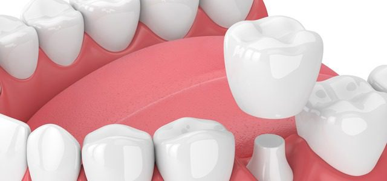

Coronas Dentales: Restaura y Protege tus Dientes con Estética y Durabilidad
Las coronas dentales son una solución efectiva para restaurar dientes dañados, debilitados o con forma irregular. También conocidas como "fundas", las coronas dentales son cubiertas personalizadas que se colocan sobre un diente natural para mejorar su forma, tamaño, fuerza y apariencia.
En nuestra clínica, entendemos la importancia de una sonrisa saludable y estética. Por eso, ofrecemos coronas dentales de alta calidad que están diseñadas para adaptarse perfectamente a tus necesidades individuales y proporcionar resultados duraderos y naturales.
Durante una consulta inicial, nuestro equipo evaluará cuidadosamente tu sonrisa y discutirá tus objetivos de tratamiento. Si se determina que una corona dental es la mejor opción para ti, te guiaremos a través del proceso paso a paso y te explicaremos qué esperar durante el tratamiento.
Nuestras coronas dentales están fabricadas con materiales resistentes y estéticos, como cerámica o porcelana, para garantizar un aspecto natural y una funcionalidad duradera. Una vez colocada, tu corona dental restaurará la fuerza y la integridad de tu diente, protegiéndolo contra futuros daños y proporcionándote una sonrisa hermosa y saludable.
Si tienes un diente dañado, debilitado o con forma irregular, ¡las coronas dentales pueden ser la solución que estás buscando! ¡Contáctanos hoy mismo para programar tu consulta inicial y descubrir cómo las coronas dentales pueden restaurar y proteger tu sonrisa!
